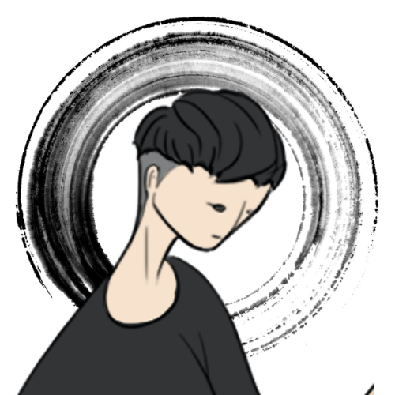

AKIFUMI CHIBA
Video Creator & Visual Storyteller
Music Video
PR Video
Talk Video
映像を通じて物語を紡ぐクリエイター
映像を通じて物語を紡ぎ、感動を届けるビデオクリエイター。音楽、PR、トークなど様々なジャンルの映像制作を手がけ、クライアントのビジョンを映像で表現することを得意としています。
映像制作の世界に魅了され、多様なプロジェクトに携わってきました。ディレクション、撮影、編集、モーションデザインまで一貫して手がけることで、統一感のある高品質な映像作品を制作しています。
特に音楽映像とPR映像の分野では、アーティストやクライアントの個性を最大限に引き出す映像表現を追求しています。
5+
Years Experience
50+
Projects Completed
3
Video Categories
Skills
Direction
企画・演出・ディレクション
Camera Work
撮影・ライティング
Video Editing
映像編集・カラーグレーディング
Motion Design
モーショングラフィックス・VFX
Music Production
作曲・編曲・音響制作
Creative Consulting
クリエイティブコンサルティング
Services
Music Video Production
アーティストの楽曲に合わせたミュージックビデオの企画・制作
PR Video Creation
企業・団体のプロモーション映像制作
Talk Video Production
インタビュー・対談・講演映像の制作
Live Streaming Support
ライブ配信の技術サポート・映像制作
Contact
映像制作のご依頼・ご相談はお気軽にお問い合わせください。
プロジェクトの詳細やご希望をお聞かせください。お客様のビジョンを映像で表現するお手伝いをいたします。